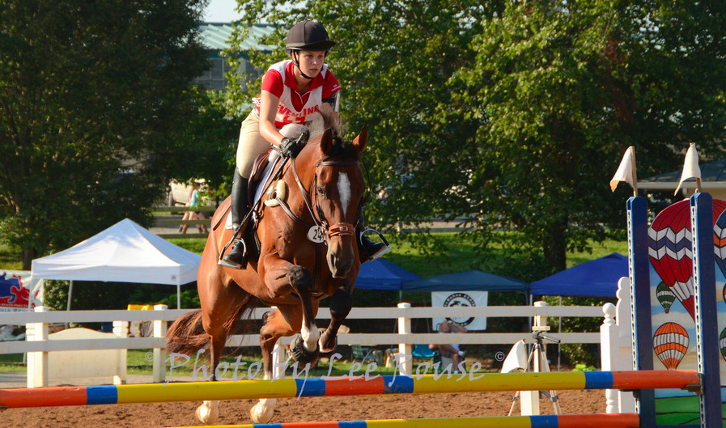
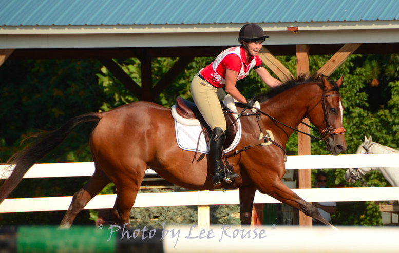

Hi! My name is Ann Bellinger; I'm a 20 year old native of Arlington, Virginia, currently in my sophomore year at Tufts University. I am studying Computer Science and Economics and in my free time, I play varsity squash, run the Students for Education Reform-Tufts chapter, act as property manager for the sorority of Alpha Omicron Pi, and ride on the equestrian team. My hobbies include skiing, horse back riding, and cooking/baking.
In my youth, I excelled in math and science as well as sports. As a Bellinger child, I took to the field for many different sports--soccer, gymnastics, lacrosse, softball, squash, skiing, horseback riding--but always had a deeper passion for equestrian sports above all else. In 2001, I joined River Bend Pony Club and worked quickly through the D and C ratings. In 2009, I achieved my 'B' and 'HA' ratings, and I am now the highest rated member of my club. The next year, 2010-2011, I took time off from school to work for Canadian Olympian, Kelli McMullen Temple. During my time there, I made the jump to Preliminary level, eventually riding for the winning Preliminary Eventing Team at USPC Championships in July of 2011. This summer I am excited to announce that I will be representing the United States Pony Clubs in an Inter-Pacific Exchange hosted by Australia.
